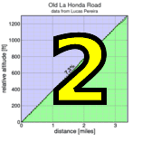

|
 |
 |
| frame from the finish line video (Pat Parseghian) |
| llumix photos are up! |
The 2010 Low-Key Hillclimbs opened with a spectacular success as the gorgeous weather graced the close to 150-strong field of riders as they once again visited the traditional series opener, Montebello Road.
With many of the usual suspects returning this year, including Tracy Colwell, Chris Phipps, and Tim Clark, it promised to be a very competitive ride. Also at the start was the multi-talented Brian Lucido, a dark horse to be first to the top. But by far the most accomplished rider there, drawing little attention to herself as the stoker on her tandem, was Beth Reid (formerly Beth Heiden), the women's 1980 World Champion on the road. Beth was also US National time trial champion in 1979 and 1980, and significantly won the Mt Washington Hillclimb in 1981. Oh yeah, and she skates fairly well, also.
Needless to say, the tandem impressed all with its strong finish taking close to 7 minutes off the standing Low-Key mixed tandem record (Liz Borra and Mike Jensen in 1997), placing Beth second in the women's standings behind Leah Toeniskoetter, with Laura Hipp third.
On the men's side another record dropped as Chris Phipps shaved 8 seconds off Tracy Colwell's standing record, also from 1997. Brian Lucido was second while Tracy himself finished a strong third. His son Skyler, a third-generation Low-Keyer, shattered the hour with his impressive 59:53. I suspect we'll see that time coming down in the future...
In the categories, notable performances came from Andre Swart, whose personal best 109 points put him in the lead in the juniors, and Dan DeBra, whose 57 points put him in the lead in the 80+ category. Let's get Dan some more competition -- recruit, recruit, recruit!
With Phipps leading the way, Western Wheelers leads the team competition over Mission Cycling and Team Low-Key. Western Wheelers has been recruiting hard and has shown it means business in 2010.
Strava T-shirt qualifiers indicated with orange background.
| pl | # | name | team | cat | time | mph | fph | score |
|---|---|---|---|---|---|---|---|---|
| 1 | 6 | Bill Bushnell | Low-Key | It Is About The Bike | 18:10 | 17.50 | 6407 | 121.86 |
| pl | # | name | team | cat | time | mph | fph | score |
|---|---|---|---|---|---|---|---|---|
| 1 | 127 | Christopher Phipps | Western Wheelers | 40+ | 25:32 | 12.45 | 4559 | 140.19 |
| 2 | 109 | Brian Lucido | Sr's & Mr's of No Mercy | Tandem | 25:57 | 12.25 | 4486 | 137.94 |
| 3 | 57 | Tracy Colwell | Team Colwell | 40+ | 26:56 | 11.81 | 4322 | 132.90 |
| 4 | 115 | Joe Mulvaney | Mission Cycling | 25+ | 27:05 | 11.74 | 4298 | 132.17 |
| 5 | 119 | Michael ONeil | Third Pillar | 30+ | 27:08 | 11.72 | 4290 | 131.92 |
| 6 | 141 | Kieran Sherlock | Western Wheelers | 40+ | 27:42 | 11.48 | 4202 | 129.22 |
| 7 | 147 | Russell Stevens | ACTC | 40+ | 27:51 | 11.42 | 4180 | 128.53 |
| 8 | 53 | Tim Clark | Low-Key | 40+ | 28:18 | 11.24 | 4113 | 126.48 |
| 9 | 34 | Jacob Berkman | Mission Cycling | 30+ | 28:21 | 11.22 | 4106 | 126.26 |
| 10 | 88 | Rich Hill | LGBRC | 45+ | 28:27 | 11.18 | 4091 | 125.82 |
| 11 | 7 | James Porter | Western Wheelers | 3 | 28:43 | 11.07 | 4053 | 124.65 |
| 12 | 84 | Shon Grabbe | San Jose Bike Club | 40+ | 28:43 | 11.07 | 4053 | 124.65 |
| 13 | 23 | Russell Reid | Centenarians | Tandem 110+ | 31:54 | 9.97 | 3649 | 123.95T |
| 14 | 72 | Brian Edwards | The Dirkers | 29:26 | 10.80 | 3955 | 121.61 | |
| 15 | 39 | Ron Brunner | Low-Key | 40+ | 29:31 | 10.77 | 3944 | 121.27 |
| 16 | 165 | Niall Murray | Pacific Bikes | 25+ | 29:37 | 10.74 | 3930 | 120.86 |
| 17 | 83 | Ben Goldman | Kain Performance | 30+ | 29:44 | 10.70 | 3915 | 120.39 |
| 18 | 100 | Brian Johnston | JahWind | 50+ | 29:49 | 10.67 | 3904 | 120.05 |
| 19 | 170 | Ryan Bickerstaff | PowerBar | 25+ | 30:08 | 10.55 | 3863 | 118.79 |
| 20 | 120 | Shance Ordell | Western Wheelers | 35+ | 30:44 | 10.35 | 3787 | 116.47 |
| 21 | 96 | Martin Hyland | Western Wheelers | 50+ | 30:45 | 10.34 | 3785 | 116.41 |
| 22 | 167 | Jared Hudson | Mission Cycling | 30+ | 30:52 | 10.30 | 3771 | 115.97 |
| 23 | 27 | Michael Barnes | Jerry | 50+ | 31:01 | 10.25 | 3753 | 115.40 |
| 24 | 123 | Christian Paquet | Doogie | 50+ | 31:04 | 10.24 | 3747 | 115.22 |
| 25 | 143 | Michael Simos | LGBRC | 35+ | 31:14 | 10.18 | 3727 | 114.60 |
| 26 | 148 | Joseph Sullivan | TiVo | 35+ | 31:15 | 10.18 | 3725 | 114.54 |
| 27 | 104 | Michael Kolb | 45+ | 31:48 | 10.00 | 3660 | 112.56 | |
| 28 | 49 | Michael Chasse | Bike Dads | 45+ | 31:51 | 9.98 | 3655 | 112.39 |
| 29 | 139 | Tim Sawyer | Bike Trip | 50+ | 31:53 | 9.97 | 3651 | 112.27 |
| 30 | 124 | Steve Peck | Silicon Valley Triathlon | 40+ | 31:56 | 9.96 | 3645 | 112.09 |
| 31 | 65 | J.D. Daniels | Eden Bikes | 35+ | 32:14 | 9.87 | 3611 | 111.05 |
| 32 | 146 | Brian Sterling | Webcor/Alto Velo | 45+ | 32:23 | 9.82 | 3594 | 110.53 |
| 33 | 38 | Gary Broeder | San Jose Bike Club | 55+ | 32:32 | 9.77 | 3578 | 110.02 |
| 34 | 89 | Russell Hill | Spike the Wonder Dog | 40+ | 32:46 | 9.70 | 3552 | 109.24 |
| 35 | 177 | Andre Swart | LGBRC | Junior | 32:55 | 9.66 | 3536 | 108.74 |
| 36 | 37 | Adam Brinkman | The Dirkers | 30+ | 32:56 | 9.66 | 3534 | 108.69 |
| 37 | 172 | Hu Liang | Currenex | 35+ | 33:02 | 9.63 | 3524 | 108.36 |
| 38 | 128 | Wojtek Poppe | Out of Shape Dad | 25+ | 33:20 | 9.54 | 3492 | 107.38 |
| 39 | 151 | Peter Tapscott | Webcor/Alto Velo | 60+ | 33:22 | 9.53 | 3489 | 107.28 |
| 40 | 45 | Nathan Cauffman | UID | 30+ | 33:23 | 9.53 | 3487 | 107.22 |
| 41 | 152 | Stewart Thompson | Pen Velo/Pomodoro | 55+ | 33:28 | 9.50 | 3478 | 106.96 |
| 42 | 30 | Matt Beadon | Nvidia | 30+ | 33:38 | 9.45 | 3461 | 106.43 |
| 43 | 71 | Ron Dunn | 50+ | 33:40 | 9.45 | 3457 | 106.32 | |
| 44 | 103 | Larry Klein | Doogie | 50+ | 33:46 | 9.42 | 3447 | 106.01 |
| 45 | 95 | Tick Houk | Plus 3 | 50+ | 33:54 | 9.38 | 3434 | 105.59 |
| 46 | 158 | David Vrane | Sr's & Mr's of No Mercy | 45+ | 34:00 | 9.35 | 3424 | 105.28 |
| 47 | 58 | Kevin Comerford | Eden Bikes | 30+ | 34:00 | 9.35 | 3424 | 105.28 |
| 48 | 136 | Curtis Ruegg | Pen Velo/Pomodoro | 45+ | 34:01 | 9.35 | 3422 | 105.23 |
| 49 | 161 | Alan Weatherall | San Jose Bike Club | 45+ | 34:02 | 9.34 | 3420 | 105.18 |
| 50 | 43 | John Carrino | Palantir | 4 | 34:04 | 9.33 | 3417 | 105.07 |
| 51 | 46 | Gino Cetani | Western Wheelers | 40+ | 34:07 | 9.32 | 3412 | 104.92 |
| 52 | 87 | Josh Hayes | Sr's & Mr's of No Mercy | 30+ | 34:08 | 9.32 | 3410 | 104.87 |
| 53 | 40 | Carl Butler | Sr's & Mr's of No Mercy | 55+ | 34:09 | 9.31 | 3408 | 104.82 |
| 54 | 31 | Sam Beal | Chain Reaction | 55+ | 34:20 | 9.26 | 3390 | 104.26 |
| 55 | 50 | Eric Chi | Nvidia | 30+ | 34:20 | 9.26 | 3390 | 104.26 |
| 56 | 21 | Tony Amadio | Fueled by Wendy's | 25+ | 34:27 | 9.23 | 3379 | 103.90 |
| 57 | 162 | Amir Weiss | LGBRC | 35+ | 34:34 | 9.20 | 3367 | 103.55 |
| 58 | 98 | Peter Ingram | Independent | 55+ | 34:44 | 9.16 | 3351 | 103.06 |
| 59 | 62 | Vince Cummings | Portolariders | 50+ | 34:44 | 9.16 | 3351 | 103.06 |
| 60 | 135 | Matt Roghair | Team Roaring Mouse | 30+ | 35:14 | 9.03 | 3304 | 101.59 |
| 61 | 111 | Paul Marshall | Violet's dad | 35+ | 35:16 | 9.02 | 3301 | 101.50 |
| 62 | 75 | David Engelbrecht | Summit chuters | 40+ Tandem | 35:32 | 8.95 | 3276 | 100.74 |
| 63 | 61 | Rob Cosaro | Doogie | 50+ | 35:34 | 8.94 | 3273 | 100.64 |
| 64 | 142 | Jeff Shute | 30+ | 35:41 | 8.91 | 3262 | 100.31 | |
| 65 | 73 | Fred Egley | Dos Egleys | 45+ | 35:46 | 8.89 | 3254 | 100.08 |
| 66 | 132 | Thomas Rabedeau | SLACer | 50+ | 35:55 | 8.85 | 3241 | 99.66 |
| 67 | 156 | Dirk Veenema | The Dirkers | 30+ | 36:03 | 8.82 | 3229 | 99.29 |
| 68 | 159 | Jonathan Walden | 45+ | 36:05 | 8.81 | 3226 | 99.20 | |
| 69 | 64 | Han Wen | Grumpy Old Man (GOM) | 40+ | 36:06 | 8.81 | 3224 | 99.15 |
| 70 | 78 | Bob Falkenberg | Webcor/Alto Velo | 45+ | 36:16 | 8.77 | 3210 | 98.70 |
| 71 | 134 | Michael Riepe | Webcor/Alto Velo | 40+ | 36:17 | 8.76 | 3208 | 98.65 |
| 72 | 85 | Gary Griffin | Bike Trip | 55+ | 36:46 | 8.65 | 3166 | 97.36 |
| 73 | 24 | Gary Auten | Silicon Valley Triathlon | 40+ | 36:48 | 8.64 | 3163 | 97.27 |
| 74 | 164 | Robert Zeljko | Almost There | 40+ | 36:59 | 8.60 | 3147 | 96.79 |
| 75 | 41 | Patrick Callahan | Hara | 40+ | 37:04 | 8.58 | 3140 | 96.57 |
| 76 | 60 | Richard Contreras | rhus | 50+ | 37:12 | 8.55 | 3129 | 96.22 |
| 77 | 54 | Barry Burr | Femur Fantastic | 4/45 | 37:38 | 8.45 | 3093 | 95.11 |
| 78 | 133 | Carlos Reyes | 20+ | 37:39 | 8.45 | 3092 | 95.07 | |
| 79 | 70 | Giles Douglas | 35+ | 37:58 | 8.38 | 3066 | 94.28 | |
| 80 | 99 | Tim Irvine | 35+ | 38:23 | 8.28 | 3033 | 93.26 | |
| 81 | 63 | John D Kastel | Death Valley | 45+ | 38:36 | 8.24 | 3016 | 92.73 |
| 82 | 48 | Steve Chapel | Western Wheelers | 65+ | 38:45 | 8.21 | 3004 | 92.37 |
| 83 | 35 | Ryan Borick | 25+ | 38:51 | 8.19 | 2996 | 92.14 | |
| 84 | 81 | Stephen Fong | San Jose Bike Club | 40+ | 38:51 | 8.19 | 2996 | 92.14 |
| 85 | 29 | Stephen Bartnikowski | Nvidia | 30+ | 38:52 | 8.18 | 2995 | 92.10 |
| 86 | 66 | Jon Degenhardt | Argonauts | 50+ | 38:54 | 8.17 | 2992 | 92.02 |
| 87 | 114 | Adam Melenkivitz | Taleo | 35+ | 38:58 | 8.16 | 2987 | 91.86 |
| 88 | 51 | Garry Chinn | Silicon Valley Triathlon | 39:09 | 8.12 | 2973 | 91.43 | |
| 89 | 169 | Harsha Bhat | 40+ | 39:13 | 8.11 | 2968 | 91.27 | |
| 90 | 91 | Frank Hislop | 30+ | 39:51 | 7.98 | 2921 | 89.82 | |
| 91 | 32 | Bernard Bell | 50+ | 40:01 | 7.95 | 2909 | 89.45 | |
| 92 | 80 | Andrew Fitzhugh | 45+ | 40:02 | 7.94 | 2908 | 89.41 | |
| 93 | 28 | Brian Bartholomew | Santa Clara PAL BMX | 40+ | 40:03 | 7.94 | 2906 | 89.38 |
| 94 | 137 | Mark Sandori | LGBRC | 40+ | 40:08 | 7.92 | 2900 | 89.19 |
| 95 | 97 | Keijiro Ikebe | Livestrong | 30+ | 40:10 | 7.92 | 2898 | 89.12 |
| 96 | 178 | Tom Barry | Poprad | 35+ | 40:12 | 7.91 | 2896 | 89.04 |
| 97 | 176 | Gary Swart | LGBRC | 50+ | 40:46 | 7.80 | 2855 | 87.80 |
| 98 | 150 | Jeff Swan | Spike the Wonder Dog | 40+ | 41:06 | 7.74 | 2832 | 87.09 |
| 99 | 12 | Will von Kaenel | LGBRC | 50+ | 41:21 | 7.69 | 2815 | 86.57 |
| 100 | 92 | Jerry Hitchcock | Spike the Wonder Dog | 55+ | 41:30 | 7.66 | 2805 | 86.25 |
| 101 | 108 | Arley Lewis | Field of Rabbits | 40+ | 41:39 | 7.64 | 2795 | 85.94 |
| 102 | 157 | Scott Violet | 35+ | 41:42 | 7.63 | 2791 | 85.84 | |
| 103 | 42 | Kley Cardona | Unattached | 45+ | 42:46 | 7.44 | 2722 | 83.70 |
| 104 | 130 | Mark Powers | Pen Velo/Pomodoro | 55+ | 43:20 | 7.34 | 2686 | 82.60 |
| 105 | 154 | Henry Tran | Palantir | 25+ | 44:18 | 7.18 | 2628 | 80.80 |
| 106 | 86 | Bob Gumaer | UID | 50+ | 44:33 | 7.14 | 2613 | 80.35 |
| 107 | 44 | Rusty Carter | Season 1 Racing | 35+ | 44:35 | 7.13 | 2611 | 80.29 |
| 108 | 118 | Ronald Ng | NorCal Bikeforums | 45+ | 44:53 | 7.09 | 2593 | 79.75 |
| 109 | 76 | Tom Everman | 50+ | 45:45 | 6.95 | 2544 | 78.24 | |
| 110 | 121 | Marco Palmeri | Bikeforums.net | Tandem | 50:34 | 6.29 | 2302 | 78.19T |
| 111 | 107 | George Lee | Team Pain | 45:51 | 6.94 | 2539 | 78.07 | |
| 112 | 224 | Robert Lensch | 50+ | 46:15 | 6.88 | 2517 | 77.39 | |
| 113 | 20 | Michael Ahern | LGBRC | 40+ | 46:41 | 6.81 | 2493 | 76.68 |
| 114 | 112 | Joseph Maurer | SF Randonneurs | 65+ | 47:28 | 6.70 | 2452 | 75.41 |
| 115 | 131 | Alec Proudfoot | 45+ | 47:40 | 6.67 | 2442 | 75.09 | |
| 116 | 166 | Christian Hilty | Team America | 40+ | 47:55 | 6.64 | 2429 | 74.70 |
| 117 | 175 | Mike Sullivan | Integrate | 35+ | 48:14 | 6.59 | 2413 | 74.21 |
| 118 | 155 | S.V. Vasudevan | Mocha Cookie | 40+ | 48:36 | 6.54 | 2395 | 73.65 |
| 119 | 180 | Johnny Stallings | Dragon Racing/847 | 45+ | 49:16 | 6.45 | 2363 | 72.66 |
| 120 | 52 | Piotrek Chojnowski | The Dirkers | 25+ | 49:56 | 6.37 | 2331 | 71.69 |
| 121 | 144 | Matt Slater | UID | 40+ | 51:25 | 6.18 | 2264 | 69.62 |
| 122 | 149 | Tim Sutton | Plus 3 | 50+ | 52:21 | 6.07 | 2223 | 68.38 |
| 123 | 56 | Skyler Colwell | Team Colwell | Junior | 59:53 | 5.31 | 1944 | 59.77 |
| 124 | 174 | Dan DeBra | Western Wheelers | 80+ | 63:14 | 5.03 | 1841 | 56.61 |
| 125 | 55 | Zachary Cohen | FactSet | 25+ | 66:49 | 4.76 | 1742 | 53.57 |
| pl | # | name | team | cat | time | mph | fph | score |
|---|---|---|---|---|---|---|---|---|
| 1 | 153 | Leah Toeniskoetter | TurningWheels for Kids | 30+ | 34:25 | 9.24 | 3382 | 125.76 |
| 2 | 22 | Beth Reid | Centenarians | Tandem 110+ | 31:54 | 9.97 | 3649 | 123.95T |
| 3 | 90 | Laura Hipp | Western Wheelers | 4 | 36:36 | 8.69 | 3180 | 118.26 |
| 4 | 116 | Sarah Murphy | 40+ | 41:26 | 7.67 | 2809 | 104.46 | |
| 5 | 77 | Lori Fabris | Plus 3 | 50+ | 42:00 | 7.57 | 2771 | 103.05 |
| 6 | 74 | Laura Egley | Dos Egleys | 45+ | 42:17 | 7.52 | 2753 | 102.36 |
| 7 | 113 | Karis Mcfarlane | Eden Bikes | 30+ | 43:19 | 7.34 | 2687 | 99.92 |
| 8 | 160 | Ivy Wang | Team Roaring Mouse | 30+ | 43:29 | 7.31 | 2677 | 99.54 |
| 9 | 26 | Sophie Barbier | All by myself. | 40+ | 43:53 | 7.25 | 2652 | 98.63 |
| 10 | 79 | Anne Findlay | Early Bird Women's Developmental Cycling Team | 4 | 44:40 | 7.12 | 2606 | 96.90 |
| 11 | 47 | Alison Chaiken | Sr's & Mr's of No Mercy | W 40+ | 45:14 | 7.03 | 2573 | 95.69 |
| 12 | 69 | Liz Dillon | Plus 3 | 50+ Novice | 45:23 | 7.01 | 2565 | 95.37 |
| 13 | 173 | Julia Zimmer-Bel | Mocha Cookie | 46:30 | 6.84 | 2503 | 93.08 | |
| 14 | 125 | Kim Perez | Pen Velo/Pomodoro | 45+ | 50:10 | 6.34 | 2320 | 86.28 |
| 15 | 168 | Unice Spunkmeyer | Team Victorious Secret | 45+ | 50:16 | 6.33 | 2316 | 86.11 |
| 16 | 171 | Letitia Davis | Plus 3 | 45+ | 51:49 | 6.14 | 2246 | 83.53 |
| 17 | 102 | Laura Jump | Spike the Wonder Dog | 53:38 | 5.93 | 2170 | 80.70 | |
| 18 | 122 | Ruth Palmeri | Bikeforums.net | Tandem | 50:34 | 6.29 | 2302 | 78.19T |
| pl | team | score | riders |
|---|---|---|---|
| 1 | Western Wheelers | 394.06 | Christopher Phipps, Kieran Sherlock, James Porter, Shance Ordell, Martin Hyland, Gino Cetani, Laura Hipp, Steve Chapel, Dan DeBra |
| 2 | Mission Cycling | 374.39 | Joe Mulvaney, Jacob Berkman, Jared Hudson |
| 3 | Low-Key | 369.61 | Bill Bushnell, Tim Clark, Ron Brunner |
| 4 | LGBRC | 349.16 | Rich Hill, Michael Simos, Andre Swart, Amir Weiss, Mark Sandori, Gary Swart, Will von Kaenel, Michael Ahern |
| 5 | Sr's & Mr's of No Mercy | 348.08 | Brian Lucido, David Vrane, Josh Hayes, Carl Butler, Alison Chaiken |
| 6 | San Jose Bike Club | 339.85 | Shon Grabbe, Gary Broeder, Alan Weatherall, Stephen Fong |
| 7 | The Dirkers | 329.59 | Brian Edwards, Adam Brinkman, Dirk Veenema, Piotrek Chojnowski |
| 8 | Doogie | 321.87 | Christian Paquet, Larry Klein, Rob Cosaro |
| 9 | Webcor/Alto Velo | 316.51 | Brian Sterling, Peter Tapscott, Bob Falkenberg, Michael Riepe |
| 10 | Eden Bikes | 316.25 | J.D. Daniels, Kevin Comerford, Karis Mcfarlane |
| 11 | 307.15 | Michael Kolb, Jeff Shute, Giles Douglas, Frank Hislop, Scott Violet, Tom Everman, Alec Proudfoot | |
| 12 | Plus 3 | 304.01 | Tick Houk, Lori Fabris, Liz Dillon, Letitia Davis, Tim Sutton |
| 13 | Nvidia | 302.78 | Matt Beadon, Eric Chi, Stephen Bartnikowski |
| 14 | Silicon Valley Triathlon | 300.79 | Steve Peck, Gary Auten, Garry Chinn |
| 15 | Pen Velo/Pomodoro | 298.46 | Stewart Thompson, Curtis Ruegg, Mark Powers, Kim Perez |
| 16 | Spike the Wonder Dog | 282.59 | Russell Hill, Jeff Swan, Jerry Hitchcock, Laura Jump |
| 17 | UID | 257.19 | Nathan Cauffman, Bob Gumaer, Matt Slater |
| 18 | Centenarians | 247.89 | Beth Reid, Russell Reid |
| 19 | Bike Trip | 209.62 | Tim Sawyer, Gary Griffin |
| 20 | Dos Egleys | 202.44 | Fred Egley, Laura Egley |
| 21 | Team Roaring Mouse | 201.13 | Matt Roghair, Ivy Wang |
| 22 | Team Colwell | 192.68 | Tracy Colwell, Skyler Colwell |
| 23 | Palantir | 185.87 | John Carrino, Henry Tran |
| 24 | Mocha Cookie | 166.73 | Julia Zimmer-Bel, S.V. Vasudevan |
| 25 | Bikeforums.net | 156.38 | Marco Palmeri, Ruth Palmeri |
| 26 | Third Pillar | 131.92 | Michael ONeil |
| 27 | ACTC | 128.53 | Russell Stevens |
| 28 | TurningWheels for Kids | 125.76 | Leah Toeniskoetter |
| 29 | Pacific Bikes | 120.86 | Niall Murray |
| 30 | Kain Performance | 120.39 | Ben Goldman |
| 31 | JahWind | 120.05 | Brian Johnston |
| 32 | PowerBar | 118.79 | Ryan Bickerstaff |
| 33 | Jerry | 115.40 | Michael Barnes |
| 34 | TiVo | 114.54 | Joseph Sullivan |
| 35 | Bike Dads | 112.39 | Michael Chasse |
| 36 | Currenex | 108.36 | Hu Liang |
| 37 | Out of Shape Dad | 107.38 | Wojtek Poppe |
| 38 | Chain Reaction | 104.26 | Sam Beal |
| 39 | Fueled by Wendy's | 103.90 | Tony Amadio |
| 40 | Portolariders | 103.06 | Vince Cummings |
| 41 | Independent | 103.06 | Peter Ingram |
| 42 | Violet's dad | 101.50 | Paul Marshall |
| 43 | Summit chuters | 100.74 | David Engelbrecht |
| 44 | SLACer | 99.66 | Thomas Rabedeau |
| 45 | Grumpy Old Man (GOM) | 99.15 | Han Wen |
| 46 | All by myself. | 98.63 | Sophie Barbier |
| 47 | Early Bird Women's Developmental Cycling Team | 96.90 | Anne Findlay |
| 48 | Almost There | 96.79 | Robert Zeljko |
| 49 | Hara | 96.57 | Patrick Callahan |
| 50 | rhus | 96.22 | Richard Contreras |
| 51 | Femur Fantastic | 95.11 | Barry Burr |
| 52 | Death Valley | 92.73 | John D Kastel |
| 53 | Argonauts | 92.02 | Jon Degenhardt |
| 54 | Taleo | 91.86 | Adam Melenkivitz |
| 55 | Santa Clara PAL BMX | 89.38 | Brian Bartholomew |
| 56 | Livestrong | 89.12 | Keijiro Ikebe |
| 57 | Poprad | 89.04 | Tom Barry |
| 58 | Team Victorious Secret | 86.11 | Unice Spunkmeyer |
| 59 | Field of Rabbits | 85.94 | Arley Lewis |
| 60 | Unattached | 83.70 | Kley Cardona |
| 61 | Season 1 Racing | 80.29 | Rusty Carter |
| 62 | NorCal Bikeforums | 79.75 | Ronald Ng |
| 63 | Team Pain | 78.07 | George Lee |
| 64 | SF Randonneurs | 75.41 | Joseph Maurer |
| 65 | Team America | 74.70 | Christian Hilty |
| 66 | Integrate | 74.21 | Mike Sullivan |
| 67 | Dragon Racing/847 | 72.66 | Johnny Stallings |
| 68 | FactSet | 53.57 | Zachary Cohen |
{kind=link}